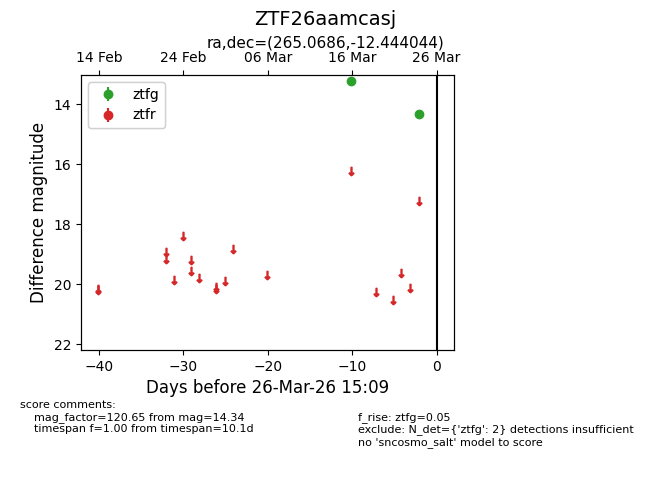
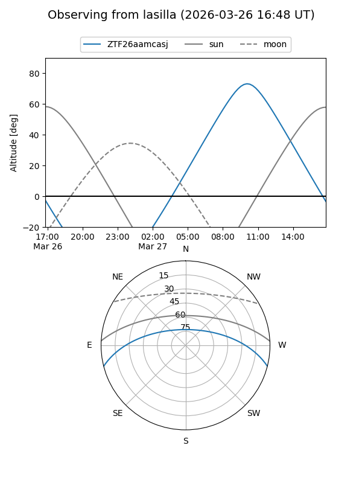
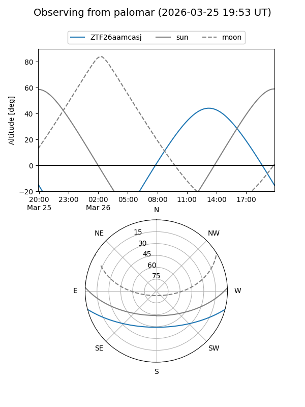

ZTF26aamcasj
Target ZTF26aamcasj at 2026-03-26 15:11
Aliases and brokers:
FINK: link
Lasair: link
ALeRCE: link
alt names
ZTF26aamcasj (ztf,fink_ztf)
Coordinates:
equatorial (ra, dec) = 265.0686,-12.44404
equatorial (HMS+DMS) = 17:40:16.45,-12:26:38.56
galactic (l, b) = (13.5104,+9.62995)
Flags:
Photometry:
last ztfg=14.34
2 ztfg detections
Lightcurve

Visibility


Additional plots